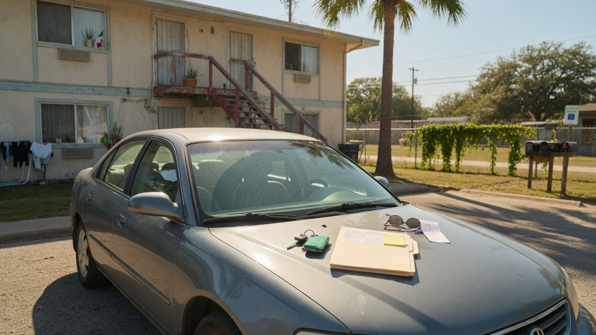

Prioritizing Texas surplus vehicles for foster youth — modeled on Louisiana House Bill 575.
Reliable transportation is essential for aging out of care successfully — getting to class, keeping a job, attending appointments, and building a stable adult life. American Foster Futures is advancing a dedicated Texas campaign to prioritize state surplus vehicles for foster youth who need affordable access to a car.
Prioritize Texas surplus vehicles for foster youth. When the state retires or redistributes surplus vehicles, eligible foster youth should have a clear, fair pathway to obtain safe, reliable transportation — reducing a major barrier to education, employment, and independence.
This campaign is based on Louisiana House Bill 575 (2026 Regular Session), which establishes a priority status for the acquisition of surplus state vehicles for youths in the extended foster care program.
AFF seeks to bring a similar approach to Texas: put foster youth first when surplus state fleet vehicles become available, so transportation is not another barrier after care.
View Louisiana HB 575